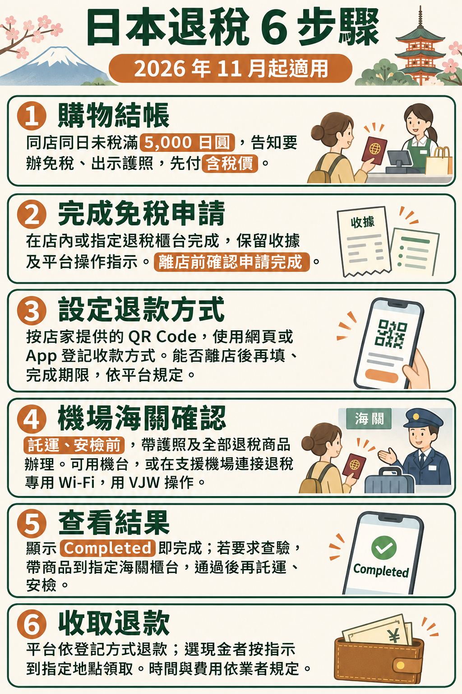

日本退稅 6 步驟

- ① 購物結帳：同店同日未稅滿 5,000 日圓，告知要辦免稅、出示護照，先付含稅價。
- ② 完成免稅申請：在店內或指定退稅櫃台完成，保留收據及平台操作指示。離店前確認申請完成。
- ③ 設定退款方式：按店家提供的 QR Code，使用網頁或 App 登記收款方式。能否離店後再填、完成期限，依平台規定。
- ④ 機場海關確認：託運、安檢前，帶護照及全部退稅商品辦理。可用機台，或在支援機場連接退稅專用 Wi-Fi，用 VJW 操作。
- ⑤ 查看結果：顯示 Completed 即完成；若要求查驗，帶商品到指定海關櫃台，通過後再託運、安檢。
- ⑥ 收取退款：平台依登記方式退款；選現金者按指示到指定地點領取。時間與費用依業者規定。
也可以用 VJW，但要在機場指定區域操作
關西機場可在國際線出發大廳的指定區域，連接海關退稅專用 Wi-Fi 後，用 Visit Japan Web 的退稅手續取代端末。在家填完入境資料，不等於完成離境退稅。
官方公布的 Wi-Fi：Customs_WiFi_For_TaxRefund
密碼：jcustoms（以現場公告為準）。
先確認 VJW 可登入；若顯示未完成或要求查驗，仍須到海關處理。VJW 無法辦理時，改用端末。
國稅廳 VJW 操作圖解 ↗官方 Wi-Fi 資訊 ↗關西機場 T2｜官方退稅端末及查驗位置圖

常見問題
還需要特殊封袋？還有消耗品 50 萬日圓上限？
新制已取消一般物品／消耗品的制度區分、消耗品特殊包裝與原本的 50 萬日圓上限；但仍須本人將全部商品攜出。沒有封袋，不代表食品、藥品、化妝品可以在日本消費。
官方新舊制度比較 ↗衣服、鞋子、包包可以先使用嗎？
消耗品以外的商品，即使在日本使用過，只要出境時仍由本人持有並實際帶出，可接受海關確認。消耗品如食品、飲料、藥品、化妝品，全部或部分消費後則不適用。
官方商品使用規定 ↗